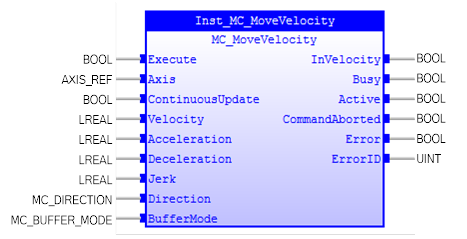
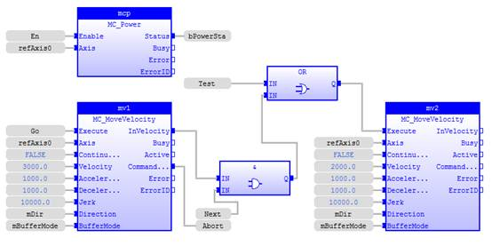
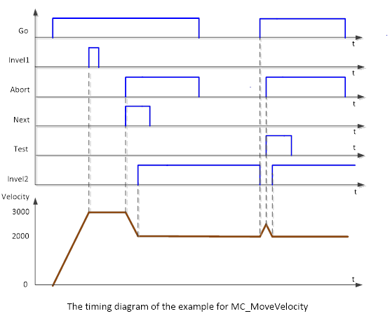

MC_MoveVelocity
Commands a never-ending controlled motion at a specified
velocity.

Description:
MC_MoveVelocity is used to control an axis to move at a
specified velocity continuously. When ‘Velocity’ is zero, the axis will keep zero
‘Velocity’ or decelerate to zero, and the state machine will stay in
'Continuous Motion'.
If input ‘Acceleration’, ‘Deceleration’, and ‘Jerk’ are
zero, these values will be set to maximum value.
Input parameter ‘Jerk’ can be used to accelerate or
decelerate smoothly.
Make sure the input and output parameters are of data type
indicated in the table below.
To stop the motion, the FB must be interrupted by another FB
issuing a new command.
The signal ‘InVelocity’ must be reset when the block is aborted
by another block.
Negative velocity * negative direction = positive velocity.
In combination with MC_MoveSuperimposed, the output ‘InVelocity’
is SET as long as the contribution of this FB (MC_MoveVelocity) to the set
velocity is equal to the commanded velocity of this FB.
Inputs/Outputs:
|
Name
|
Data Type
|
Description
|
|
INPUTS
|
|
Execute
|
BOOL
|
Start the motion at its rising edge
|
|
Axis
|
AXIS_REF
|
Reference to the axis
|
|
ContinuousUpdate
|
BOOL
|
Make the function block use the
current values of the input variables and apply it to the ongoing movement
|
|
Velocity
|
LREAL
|
Value of the maximum velocity. It is
a signed value
|
|
Acceleration
|
LREAL
|
Value of the deceleration
(increasing energy of the motor)
|
|
Deceleration
|
LREAL
|
Value of the deceleration (decreasing
energy of the motor)
|
|
Jerk
|
LREAL
|
Value of the Jerk
|
|
Direction
|
MC_DIRECTION
|
Enumerated
type (1 -of -3 values: )
mcPositiveDirection,
mcNegativeDirection,
mcCurrentDirection
.
Note : shortest way not applicable
|
|
BufferMode
|
MC_BUFFER_MODE
|
Defines
the chronological sequence of the FB. Enumerated type: mcAborting, mcBuffered.
|
|
OUTPUTS
|
|
InVelocity
|
BOOL
|
Commanded
velocity reached
|
|
Busy
|
BOOL
|
The
FB is not finished and new output values are to be expected
|
|
Active
|
BOOL
|
Indicates
that the FB has control on the axis
|
|
CommandAborted
|
BOOL
|
'Command'
is aborted by another command
|
|
Error
|
BOOL
|
Signals
that an error has occurred within the FB
|
|
ErrorID
|
UINT
|
Error
identification
|
Examples:
Example 1:
The following figure shows an example of two MC_MoveVelocity
in operation:

|
 Example
Example
|
|
VAR
Inst_MC_MoveVelocity :
MC_MoveVelocity
;
mv1 :
MC_MoveVelocity
;
Inst_MC_MoveVelocity1 :
MC_MoveVelocity
;
mv2 :
MC_MoveVelocity
;
Inst_MC_Power :
MC_Power
;
mcp :
MC_Power
;
refAxis0 :
lib:AXIS_REF
;
(*$desc=Axis reference*)
En :
BOOL
:=
FALSE
;
(*$desc=Enable axis power on*)
bPowerSta :
BOOL
:=
FALSE
;
(*$desc=Power status of axis*)
mDir :
MC_DIRECTION
:= mcPositiveDirection ;
mBufferMode :
MC_BUFFER_MODE
:= mcAborting ;
(*$desc=Buffer mode setting*)
Go :
BOOL
:=
FALSE
;
(*$desc=To start motion*)
Abort :
BOOL
:=
FALSE
;
(*$desc=Command aborted status*)
Next :
BOOL
:=
FALSE
;
(*$desc=Enable next FB motion*)
Test :
BOOL
:=
TRUE
;
(*$desc=Start next FB motion if
Next = TRUE*)
END_VAR
|
Timing diagram for the above example is as shown below:

1
、The
left part of the timing diagram illustrates the case in which the 2
nd
FB is called after the 1
st one is completed. If the first reaches
the commanded velocity 3000 then the output 'mv1.Invelocity' and the signal ‘Next’
causes the 2
nd FB to move to the velocity 2000. In the next cycle
'mv1.Invelocity' is reset and 'mv1.CommandAborted' is set. Therefore the
'Execute' of the 2
nd FB is reset. And as soon as the axis reaches
'Velocity' 2000 the 'mv2.Invelocity' is set.
2
、The
right part of the timing diagram illustrates the case in which the 2
nd
FB starts execution while the 1
st FB is not yet 'Invelocity'. The
following sequence is shown: The 1
st motion is started again by ‘Go’
at the input 'mv1.Execute'. While the 1
st FB is still accelerating
to reach the velocity 3000, the 1
st FB will be interrupted and
aborted because the Test signal starts the run of the 2
nd FB. Now
the 2
nd FB runs and decelerates the velocity to 2000.
See also: